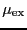

Thermodynamic integration is a conceptually simple, albeit expensive, way to calculate free energy differences from MC or MD simulations. In this example, we will consider the calculation (again) of chemical potential in a Lennard-Jones fluid at a given temperature and density, a task performed very well already by the Widom method (so long as the densities are not too high.) More details of the method can be found in Reference [15].
We begin with the relation derived in the book for a free energy
difference,
, between two systems which are identical
(same number of particles, density, temperature, etc.) except
that they obey two different potentials. System I obeys
and System II
. To measure this
free energy difference, we must integrate along a reversible path from
I to II. So let us suppose that we can write a ``metapotential'' that
uses a switching parameter, , to measure distance along this
path. So, when , we are in System I, and when we
are in System II. One way we might encode this (though this is not
necessarily a general splitting, as we shall see below) is
| (210) |
Let us consider the canonical partition function for a system obeying
a general potential
:
| (211) |
| (212) | |||
| (213) | |||
| (214) |
The free energy difference between I and II is given by:
| (215) |
To compute , we imagine two systems: System I has  ``real'' particles, and 1 ideal gas particle, and system II has
``real'' particles, and 1 ideal gas particle, and system II has  real particles. The two free energies can be written:
real particles. The two free energies can be written:
| (216) | |||
| (217) |
For large values of  , we see that
. So, we have another route to compute .
First, we tag a particle , call it the
``-particle'', and apply the following modified potential to
its pairwise interactions:
, we see that
. So, we have another route to compute .
First, we tag a particle , call it the
``-particle'', and apply the following modified potential to
its pairwise interactions:
| (219) |
Next, we conduct many independent MC simulations at various values of
and a given value of  and
and  , generating for each
a table of
vs. which can be integrated to yield a single value for
. This turns out to be an expensive way to compute the
chemical potential for a Lennard-Jones fluid, compared to the Widom
method (Sec. 6.1), for at least low to moderate densities.
, generating for each
a table of
vs. which can be integrated to yield a single value for
. This turns out to be an expensive way to compute the
chemical potential for a Lennard-Jones fluid, compared to the Widom
method (Sec. 6.1), for at least low to moderate densities.
I have done a rough comparison of the thermodynamic integration method
described above to the grand canonical MC simulation technique
described in Sec. 5.1. Below is a plot of
vs. for three densities
. Each point is computed from a single MC simulation
using the code mclj_ti.c. The
temperature was  = 2.0, and run for 10
= 2.0, and run for 10 cycles for
cycles for  = 216.
We see that the data is not terribly smooth; it is not clear how
many more cycles would result in smoother data.
= 216.
We see that the data is not terribly smooth; it is not clear how
many more cycles would result in smoother data.
|
 |
|
|
Questions: